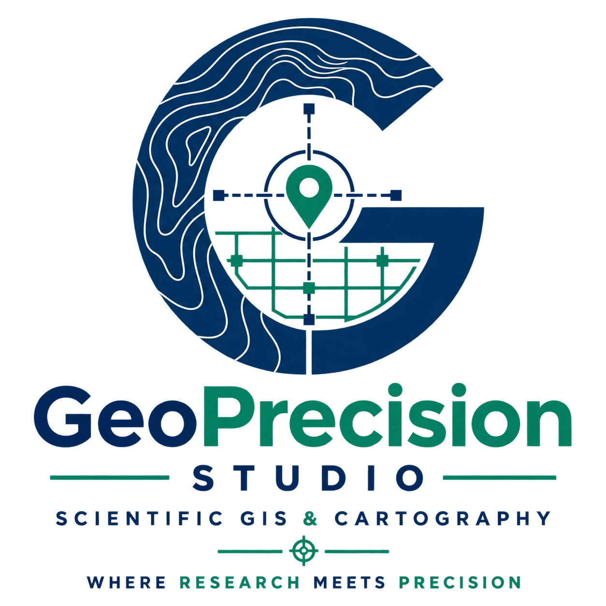

⌖
GIS والتحليل المكاني
تحليل العلاقات المكانية، القرب، التوزيع، الشبكات، إمكانية الوصول ودعم القرار.

GIS وخرائط وتحليل مكاني لخدمة طلبة الماستر والدكتوراه والباحثين. نحوّل البيانات الجغرافية الخام إلى نتائج مكانية وخرائط علمية واضحة ومهيأة للاستخدام الأكاديمي.
هدفنا ليس صنع خريطة جميلة فقط، بل تحويل السؤال البحثي إلى نتيجة مكانية مفهومة.
تحليل العلاقات المكانية، القرب، التوزيع، الشبكات، إمكانية الوصول ودعم القرار.
إعداد خرائط علمية للتقارير، المذكرات، الأطروحات، الأبحاث والعروض.
معالجة وتحليل صور الأقمار الصناعية واستخراج المعلومات المكانية لخدمة الدراسات.
تحليل واستكشاف وعرض البيانات البحثية إحصائيًا باستخدام R.
إخراج خرائطي احترافي يراعي الوضوح العلمي، التسلسل البصري والاستخدام الأكاديمي.
من تحديد الحاجة المكانية إلى إخراج الخريطة أو النتيجة الجغرافية النهائية.
منهجية تحافظ على التحليل والمنطق الجغرافي في كل مرحلة، وليس فقط على جمالية الشكل النهائي.
السؤال البحثي، منطقة الدراسة، البيانات والمخرج المطلوب.
المعالجة المكانية، المؤشرات، الاستشعار عن بعد أو التحليل الإحصائي.
اختيار الرموز والألوان والمفتاح والتسلسل البصري المناسب للرسالة العلمية.
نتيجة نهائية واضحة ومناسبة للاستخدام الأكاديمي أو المهني.
أرسل تفاصيل مشروعك عبر الخاص وحدد ما الذي تريد تحليله أو تمثيله.